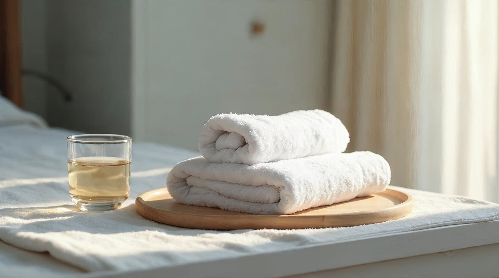
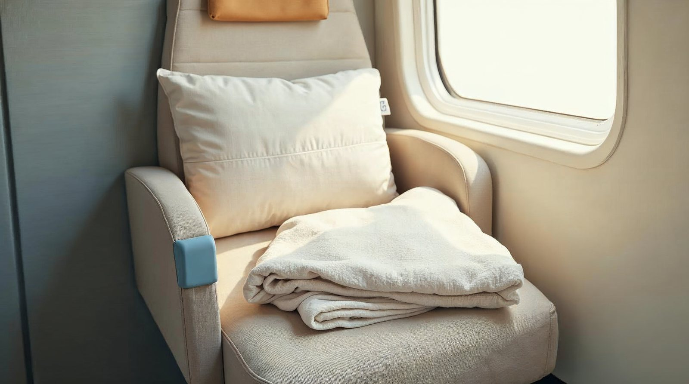
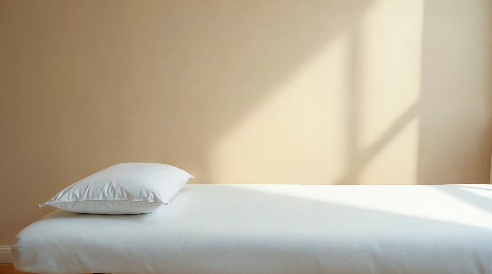
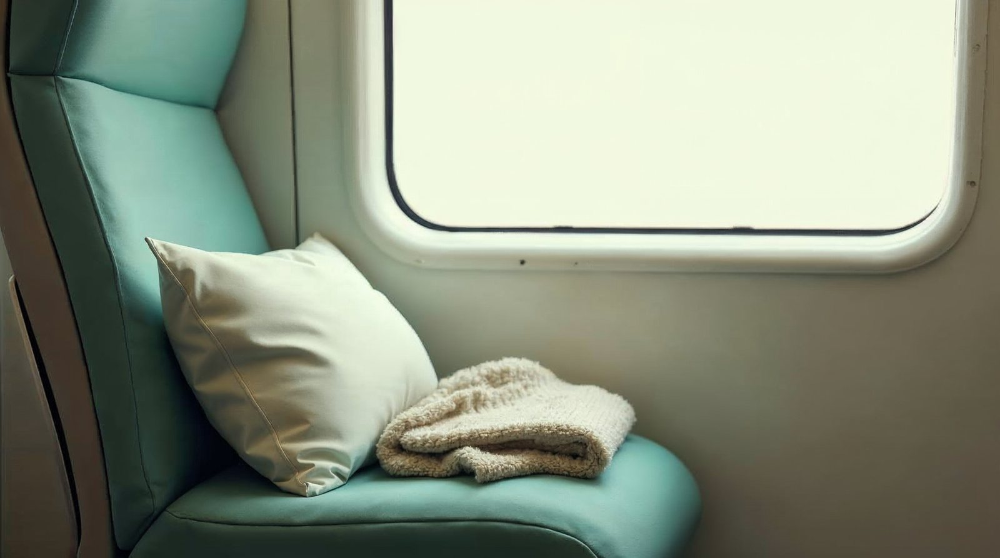
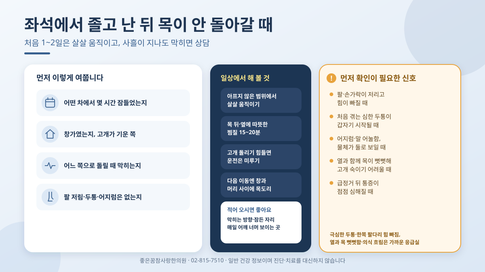

이종호 한의사 감수좋은꿈참사랑한의원 대표원장 (한의사 면허번호 19769)발행 2026-11-27 · 수정 2026-11-27
이 글의 차례
연말에는 고향이나 여행지로 가는 고속버스와 기차, 송년회를 마치고 돌아오는 심야버스에서 깜빡 잠드는 일이 많아요. 피곤한 몸에 차가 흔들리면 눈꺼풀이 저절로 내려오죠. 그러다 내릴 곳 안내에 깜짝 깨서 고개를 드는 순간, 목이 '뜨끔' 했던 경험 있으신 분 많으실 거예요.
좌석에 앉은 채 잠이 들면 머리를 받치던 목 근육이 풀리면서 고개가 앞으로 툭 떨어지거나, 창문 쪽으로 기운 채 한참을 머물러요. 그러다 차가 덜컹하거나 깜짝 깰 때 목이 갑자기 당겨지는 거예요. 그러고 나면 다음 날 아침 한쪽으로 고개를 돌리기 어렵고, 목 옆과 뒤, 날개뼈 위쪽까지 결려 운전할 때 옆을 보기도 힘들어지는 분이 많아요.
한의학에서는 자고 난 뒤 목이 뻣뻣하고 돌아가지 않는 것을 낙침(落枕)이라 불러요. 흔한 일이에요. 대개 처음 1~2일은 아프지 않은 범위에서 목을 살살 움직이고 따뜻하게 하며, 세게 꺾거나 주무르지 않는 것만으로도 며칠에서 일주일 사이 차츰 풀리는 경우가 많아요.
왜 세게 주무르면 안 되는지 아세요? 놀라서 잔뜩 움츠린 근육은 겁먹은 강아지 같거든요. 억지로 끌어당기면 더 웅크리고, 가만히 기다려 주면 스스로 풀려 나와요. 사흘이 지나도 같은 방향이 계속 막히거나 일주일 넘게 이어진다면, 그때 목과 등 위쪽 관절의 움직임을 살펴 추나 상담을 받아 볼 수 있어요.
왜 좌석에서 졸고 나면 목이 한쪽으로 돌아가지 않을까요
- 어른의 머리는 5kg 안팎으로 무겁습니다. 깨어 있을 때는 목 뒤 근육이 끊임없이 조금씩 힘을 주어 머리를 받치지만, 잠이 들면 이 힘이 풀려 머리 무게가 목의 인대와 관절에 그대로 걸립니다.
- 고개가 앞으로 떨어지면 목 뒤쪽이, 옆으로 기울면 반대쪽 목 옆 근육이 끝까지 늘어난 채로 오래 머뭅니다. 고개를 숙일수록 목이 버텨야 하는 힘은 몇 배로 커집니다.
- 버스가 흔들리거나 급정거할 때, 혹은 깜짝 놀라 깰 때 늘어나 있던 근육이 반사적으로 확 수축하며 작은 손상이나 경련이 생기기 쉽습니다. 이때 목뼈 사이 작은 관절이 한쪽으로 걸린 듯 움직임이 막히기도 합니다.
- 창가 자리는 유리가 차고 틈새로 찬 바람이 들어와, 기대어 잠든 쪽 목과 어깨가 식으면서 근육이 더 굳습니다. 반대로 히터 바람을 정면으로 맞아 땀이 났다가 내릴 때 찬 공기에 식는 것도 부담이 됩니다.
- 송년회에서 술을 마신 뒤나 며칠 잠이 모자란 상태에서는 잠이 깊어, 목이 불편해도 자세를 바꾸지 못하고 한 자세로 오래 머뭅니다.
- 두꺼운 패딩의 모자나 둥글게 만 목도리가 등받이와 목 사이에 끼면 머리를 앞으로 밀어 고개가 더 숙여집니다.
- 평소 휴대폰을 오래 내려다보는 습관으로 목과 등 위쪽이 이미 굳어 있거나, 늘 같은 쪽 어깨에 가방을 메는 분은 같은 자세에서도 더 쉽게 결립니다.
- 한의학에서는 몸이 지치고 기혈이 약해진 틈에 찬 바람(풍한)이 목과 어깨의 경락에 머물면 근육이 당기고 굳어 고개를 돌리기 어려워진다고 설명합니다. 그래서 목 옆과 뒤를 지나는 경락을 따라 뭉친 자리를 함께 살핍니다.
먼저 이렇게 여쭙니다
- 언제, 어떤 교통수단에서 몇 시간쯤 잠들었는지, 창가였는지 통로 쪽이었는지 여쭙니다.
- 잠든 동안 고개가 어느 쪽으로 기울었는지, 깰 때 덜컹하거나 급정거가 있었는지 여쭙니다.
- 오른쪽과 왼쪽 가운데 어느 쪽으로 돌릴 때 막히는지, 숙이기와 젖히기 가운데 무엇이 더 힘든지 여쭙니다.
- 아픈 자리가 목 옆인지 뒤인지, 날개뼈 위쪽이나 어깨까지 이어지는지 여쭙니다.
- 팔이나 손가락 저림, 두통, 어지럼, 귀 울림이 함께 있는지 여쭙니다.
- 술을 마신 뒤였는지, 그 주에 잠이 모자랐는지 여쭙니다.
- 예전에 목 디스크나 목 수술, 교통사고로 목을 다친 적이 있는지 여쭙니다.
- 평소 베개 높이와 잠자는 자세, 휴대폰과 컴퓨터를 쓰는 시간, 가방 메는 쪽도 함께 여쭙니다.

일상에서 먼저 해 볼 수 있는 것
처음 1~2일
- 목을 아예 고정하지 말고, 아프지 않은 범위 안에서 천천히 움직입니다. 막힌 쪽 끝까지 억지로 돌리지 말고 편한 쪽부터 살살 돌렸다가 가운데로 돌아오기를 몇 번 합니다.
- 목 뒤와 옆에 따뜻한 찜질을 15~20분, 하루 두세 번 합니다. 따뜻한 물로 샤워할 때 목과 어깨에 물줄기를 잠시 대어 주어도 좋습니다. 부딪힌 일이 있고 화끈거린다면 처음에는 차갑게 하는 편이 편할 수 있습니다.
- 아픈 자리를 세게 주무르거나 마사지건으로 두드리지 않고, 스스로 목을 '뚝' 소리 나게 꺾지 않습니다.
- 잠잘 때는 바로 누우면 목 아래 오목한 곳을 채울 만큼, 옆으로 누우면 어깨 높이만큼 베개 높이를 맞춥니다. 수건을 돌돌 말아 목 아래에 받쳐도 됩니다.
- 고개를 옆으로 돌리기 어려운 동안에는 운전을 미룹니다. 차선을 바꾸거나 후진할 때 옆과 뒤를 제대로 볼 수 없기 때문입니다.
- 목도리로 목을 감싸 찬 바람을 막고, 실내에서도 목이 식지 않게 합니다.
사흘째 이후 가볍게 풀기
- 턱 당기기: 의자에 바르게 앉아 시선은 앞을 둔 채 턱을 뒤로 살며시 당겨 5초 머물고 풀기를 10번 합니다.
- 어깨 내리기: 어깨를 귀 쪽으로 올렸다가 숨을 내쉬며 툭 떨어뜨리기를 10번 합니다.
- 날개뼈 모으기: 양 날개뼈를 등 가운데로 5초 모았다가 풀기를 10번 합니다.
- 등 위쪽 펴기: 등받이가 낮은 의자에 앉아 두 손을 머리 뒤에 깍지 끼고, 등받이 위 가장자리에 등을 대고 가슴을 살며시 젖혀 5초 머뭅니다. 5번 합니다.
- 고개 돌리기: 편한 쪽으로 천천히 돌렸다가, 막힌 쪽으로는 아프기 직전까지만 돌려 5초 머뭅니다. 날마다 조금씩 더 돌아가는지 확인합니다.
- 따뜻한 샤워 뒤나 몸이 데워졌을 때 하고, 팔로 저림이 뻗치면 바로 멈춥니다.
다음 이동부터 바꿔 볼 것
- 목베개는 머리가 앞이나 옆으로 떨어지지 않게 받쳐 주는 것을 고릅니다. U자 목베개를 썼는데도 고개가 앞으로 떨어진다면 트인 쪽을 뒤로 돌려 턱 아래를 받치게 써 보는 분도 있습니다.
- 등받이는 조금만 젖혀 머리가 머리 받침에 닿게 하고, 머리 받침 높이를 조절할 수 있다면 뒤통수 가운데에 맞춥니다.
- 창가에 기대어 잘 때는 벗은 패딩이나 목도리를 접어 머리와 창 사이에 끼워, 찬 유리에 목이 직접 닿지 않게 합니다.
- 두꺼운 패딩은 앉기 전에 벗어 무릎 위에 덮고, 모자가 목 뒤에 뭉치지 않게 합니다.
- 두 시간 넘는 길이라면 휴게소에 설 때 버스에서 내려 몇 분 걷고, 기차에서는 중간에 일어나 통로를 오가며 목과 어깨를 돌립니다.
- 휴대폰이나 책을 내려다보다 그대로 잠드는 일이 많으니, 졸리면 화면을 끄고 머리를 받침에 붙인 뒤 눈을 감습니다.
- 술을 마신 날 귀갓길이라면 내릴 곳 알람을 맞추고, 머리를 받침에 기댄 자세부터 잡은 뒤 눈을 붙입니다.
- 짐을 머리 위 선반에 올릴 때는 목을 크게 젖히지 말고 몸을 선반 가까이 붙여 올립니다.

상황별 예시
- 예를 들어 연말 휴가로 고향에 가는 고속버스에서 네 시간 동안 창가에 기대 잠든 직장인이, 다음 날 아침 오른쪽으로 고개를 돌릴 수 없고 목 옆이 당기는 경우, 처음 이틀은 따뜻한 찜질과 편한 쪽으로 살살 돌리기를 하며 운전은 미룹니다. 돌아오는 길에는 목도리를 접어 창과 머리 사이에 끼우고, 휴게소에서 내려 몇 분 걸어 봅니다.
- 예를 들어 송년회를 마치고 심야버스에서 고개를 푹 숙인 채 잠들었다가 종점 근처에서 깬 회사원이, 다음 날 목 뒤와 날개뼈 위쪽이 뻐근하고 뒷머리가 묵직한 경우, 물을 충분히 마시고 잠을 보충하며 목 뒤를 따뜻하게 해 봅니다. 두통이 점점 심해지거나 토할 것 같다면 지켜보지 말고 진료를 받습니다.
- 예를 들어 노량진에서 시험을 준비하는 수험생이 연말에 고속버스로 집에 다녀오며 단어장을 보다 그대로 잠든 뒤, 원래 뻐근하던 목과 등 위쪽이 더 굳어 고개를 숙이기 힘든 경우, 사흘째부터 턱 당기기와 등 위쪽 펴기를 하고 독서실 책상과 의자 높이도 함께 살펴봅니다. 2주가 넘도록 같은 상태라면 상담을 받아 봅니다.
- 예를 들어 버스가 급정거하며 잠들어 있던 목이 앞뒤로 크게 흔들린 뒤 아픈 경우는 단순히 잘못 잔 것과 다르게 봅니다. 아픈 정도가 크지 않아도 그날 상황을 기록해 두고 진료를 받으며, 교통사고 처리 여부도 함께 확인합니다.
자주 하는 오해
- 목이 안 돌아가면 뼈가 틀어진 것이니 한 번에 '뚝' 맞추면 바로 풀린다고 여기는 분이 많습니다. 근육이 놀라 굳어 있는 처음 며칠은 세게 꺾기보다 근육을 먼저 풀고 움직임을 조금씩 되찾는 편이 편안합니다.
- 아플수록 세게 주물러야 빨리 풀린다고 생각하기 쉽지만, 놀란 근육을 세게 누르면 오히려 더 굳기도 합니다.
- 다 풀릴 때까지 목을 움직이지 말아야 한다고 여기는 분도 있습니다. 아프지 않은 범위에서 살살 움직이는 편이 대개 회복이 빠릅니다.
- 목베개만 있으면 괜찮다고 여기기 쉽지만, 높이와 모양이 맞지 않으면 오히려 고개를 앞으로 밀 수 있습니다.
- 파스를 붙였으니 운전해도 된다고 생각하기 쉽지만, 고개를 충분히 돌릴 수 없다면 운전은 미룹니다.
스스로 점검해 보세요
- 버스나 기차에서 앉은 채로 한 시간 넘게 자는 일이 잦다.
- 잠들 때 창문에 머리를 기대거나 고개를 푹 숙인다.
- 졸기 직전까지 휴대폰이나 책을 내려다본다.
- 술을 마신 날이나 잠이 모자란 날 귀갓길에 깊이 잠든다.
- 평소에도 아침에 목이 뻣뻣하거나 날개뼈 위쪽이 자주 뭉친다.
- 한쪽 어깨에만 가방을 멘다.
- 해마다 겨울이면 목이 잘 결린다.

한의원에서 함께 살필 수 있는 경우
- 사흘이 지나도 같은 방향으로 고개를 돌리기 어려운 경우
- 일주일 넘게 목 옆이나 날개뼈 위쪽 결림이 이어지는 경우
- 잘못 자고 나면 목이 결리는 일이 한 해에 여러 번 반복되는 경우
- 목 결림과 함께 뒷머리가 묵직하고 어깨까지 굳어 잠을 설치는 경우
좋은꿈참사랑한의원에서는 첫 방문 때 맥부터 짚어 보고, 잠들었던 교통수단과 자리, 자세, 아프기 시작한 때와 막히는 방향을 차례로 여쭈며, 평소 베개와 잠자는 자세, 휴대폰과 컴퓨터를 쓰는 습관도 함께 정리합니다. 이어 혀와 배를 살펴 몸이 지쳐 있는지, 찬 기운이 남아 있는지, 잠과 소화는 어떤지 확인합니다.
이어 고개를 좌우로 돌리고 숙이고 젖힐 때의 범위를 양쪽으로 비교하고, 목과 등 위쪽, 날개뼈 주변의 눌러서 아픈 자리, 팔과 손의 감각과 힘을 차례로 살펴봅니다. 근육 상태를 더 보아야 할 때는 초음파로 아픈 쪽과 반대쪽을 비교해 보기도 합니다.
통증이 심한 처음 며칠은 침과 온열 치료로 근육의 긴장을 먼저 풀고, 급한 통증이 가라앉은 뒤 목뼈와 등뼈 관절의 움직임을 살펴 손으로 움직임을 되찾도록 돕는 추나요법이 맞을지 상의합니다. 골다공증이나 목 수술 이력, 혈액을 묽게 하는 약 복용이 있다면 미리 알려 주세요. 추나요법의 건강보험 적용 여부는 방문 전 전화로 확인해 주세요.
팔 저림이나 힘 빠짐처럼 신경이 눌린 신호가 보이면 영상 검사가 가능한 병원 진료를 먼저 권해 드립니다. 다시 오시면 지난번 막혔던 방향이 얼마나 풀렸는지, 정한 동작과 이동 습관을 해 보셨는지 이어서 여쭙습니다.

얼마나 지켜보고 언제 상담할까요
- 잘못 자서 생긴 목 결림은 대개 2~3일째부터 돌아가는 범위가 조금씩 넓어지고, 며칠에서 일주일 사이 차츰 풀리는 경우가 많습니다.
- 매일 아침 거울 앞에서 양쪽으로 고개를 돌려 보고, 어깨 너머 어디까지 보이는지 적어 두면 변화를 알기 쉽습니다.
- 사흘이 지나도 막힌 방향이 그대로이거나, 일주일 넘게 이어지면 상담을 받아 보세요.
- 진료 시간은 평일 09:30~20:00(점심 13:00~14:00), 토·일·공휴일 09:30~15:00(점심시간 없음)입니다. 연말연시 특정 날짜의 진료 여부와 접수 마감 시각은 방문 전 전화로 확인해 주세요.
- 아래 신호가 있으면 지켜보지 말고 먼저 진료를 받습니다.
이렇게 기록해 오시면 상담이 쉬워집니다
목 결림은 하루하루 조금씩 달라져서, 며칠 지나면 "좀 풀린 것 같기도 하고…" 하고 애매해지기 쉬워요. 그래서 어깨 너머로 어디까지 보이는지를 날마다 같은 방법으로 확인해 두시면 흐름이 또렷해지거든요.
- 잠든 날짜와 교통수단, 앉은 자리(창가·통로 쪽), 잠든 시간
- 잠든 동안 고개가 기운 방향과 깰 때의 상황(덜컹함, 급정거)
- 막히는 방향과 날마다 어깨 너머 어디까지 보이는지
- 아픈 자리를 표시한 그림과 0~10 통증 점수
- 팔 저림, 두통, 어지럼이 있었는지
- 평소 베개 높이와 잠자는 자세, 복용 중인 약과 목 병력
막힌 목을 살피는 건 제가 맡을게요. 대신 하나만 부탁드려요. 다음 먼 길에는 목베개를 하나 챙겨 주세요. 졸지 마시라는 게 아니에요. 졸아도 고개가 툭 떨어지지 않게 받쳐 두자는 거예요.
딴 건 편하게 하셔도 돼요. 아프다고 목을 아예 안 움직이기보다는, 아프지 않은 데까지만 살살 돌려 보시면 돼요. 최대한 천천히요. 먼 길 다녀오시느라 수고 많으셨어요. 궁금한 건 그냥 편하게 물어보세요.
이런 증상은 먼저 확인이 필요합니다
- 팔이나 손가락이 저리고 감각이 둔하거나, 물건을 떨어뜨릴 만큼 힘이 빠지는 경우
- 지금까지 겪어 보지 못한 심한 두통이 갑자기 시작되거나, 어지럼, 말 어눌함, 물체가 둘로 보이는 증상이 함께 있는 경우
이런 신호가 있으면 한의원보다 가까운 병원이나 응급실을 먼저 찾으세요.
관련 글

여쭙는 것
- 언제, 어떤 교통수단에서 몇 시간쯤 잠들었는지, 창가였는지 통로 쪽이었는지 여쭙니다.
- 잠든 동안 고개가 어느 쪽으로 기울었는지, 깰 때 덜컹하거나 급정거가 있었는지 여쭙…
- 오른쪽과 왼쪽 가운데 어느 쪽으로 돌릴 때 막히는지, 숙이기와 젖히기 가운데 무엇이…
생활에서 해 볼 것
- 목을 아예 고정하지 말고, 아프지 않은 범위 안에서 천천히 움직입니다. 막힌 쪽 끝…
- 목 뒤와 옆에 따뜻한 찜질을 15~20분, 하루 두세 번 합니다. 따뜻한 물로 샤워…
- 아픈 자리를 세게 주무르거나 마사지건으로 두드리지 않고, 스스로 목을 '뚝' 소리…
한의원에서 함께 살필 것
- 사흘이 지나도 같은 방향으로 고개를 돌리기 어려운 경우
- 일주일 넘게 목 옆이나 날개뼈 위쪽 결림이 이어지는 경우
- 잘못 자고 나면 목이 결리는 일이 한 해에 여러 번 반복되는 경우
먼저 확인이 필요한 신호
- 팔이나 손가락이 저리고 감각이 둔하거나, 물건을 떨어뜨릴 만큼 힘이 빠지는 경우
- 지금까지 겪어 보지 못한 심한 두통이 갑자기 시작되거나, 어지럼, 말 어눌함, 물체…
한눈에 보는 표
| 구분 | 핵심 |
|---|---|
| 여쭙는 것 | 언제, 어떤 교통수단에서 몇 시간쯤 잠들었는지, 창가였는지 통로 쪽이었는지 여쭙니다. 잠든 동안 고개가 어느 쪽으로 기울었는지, 깰 때 덜컹하거나 급정거가 있었는지 여쭙니다. |
| 생활에서 해 볼 것 | 목을 아예 고정하지 말고, 아프지 않은 범위 안에서 천천히 움직입니다. 막힌 쪽 끝까지 억지로 돌리지 말고 편한 쪽부터 살살 돌렸다가 가운데로 돌아오기를 몇 번 합니다. 목 뒤와 옆에 따뜻한 찜질을 15~20분, 하루 두세 번 합니다. 따뜻한 물로 샤워할 때 목과 어깨에 물줄기를 잠시 대어 주어도 좋습니다. 부딪힌 일이 있고 화끈거린다면 처음에는 차갑게 하는 편이 편할 수 있습니다. |
| 한의원에서 함께 살필 것 | 사흘이 지나도 같은 방향으로 고개를 돌리기 어려운 경우 일주일 넘게 목 옆이나 날개뼈 위쪽 결림이 이어지는 경우 |
| 먼저 확인이 필요한 신호 | 팔이나 손가락이 저리고 감각이 둔하거나, 물건을 떨어뜨릴 만큼 힘이 빠지는 경우 지금까지 겪어 보지 못한 심한 두통이 갑자기 시작되거나, 어지럼, 말 어눌함, 물체가 둘로 보이는 증상이 함께 있는 경우 |
자주 묻는 질문
목이 안 돌아갈 때 따뜻하게 하나요, 차갑게 하나요?
잘못 자서 굳은 목에는 따뜻한 찜질이 편한 경우가 많습니다. 부딪히거나 급정거로 다친 뒤 화끈거리고 붓는 느낌이 있다면 처음 하루 이틀은 차갑게 하는 편이 편할 수 있습니다. 어느 쪽이든 피부에 직접 대지 않습니다.
목이 결린 다음 날 바로 추나를 받아도 되나요?
통증이 심한 처음 며칠은 근육을 먼저 풀고 상태를 보는 경우가 많습니다. 목과 등 위쪽 관절의 움직임, 팔의 감각과 힘을 살펴본 뒤 추나요법이 맞을지와 시기를 함께 정합니다.
목베개는 어떤 것을 고르면 좋을까요?
머리가 앞이나 옆으로 떨어지지 않게 받쳐 주고, 너무 높아 고개를 앞으로 밀지 않는 것이 좋습니다. 써 보고 내렸을 때 목이 더 뻐근했다면 높이나 쓰는 방향을 바꿔 봅니다.
고개가 잘 안 돌아가는데 운전해도 될까요?
차선을 바꾸거나 후진할 때 옆과 뒤를 충분히 볼 수 없다면 운전은 미루세요. 진통제나 근육 이완제를 드셨다면 졸음이 올 수 있어 약 설명서를 먼저 확인합니다.
해마다 겨울이면 목이 자주 결리는데 왜 그럴까요?
추위에 어깨를 움츠리는 자세와 찬 바람, 연말의 피로와 모자란 잠이 겹치면 목이 쉽게 굳습니다. 평소 자세와 잠, 몸의 온기를 함께 살펴 반복되는 흐름을 줄이는 쪽으로 상의해 볼 수 있습니다.
좋은꿈참사랑한의원은 재진 때 지난번 이야기부터 이어서 여쭙니다. 진료시간과 예약은 오시는 길에서 확인하세요.
어디서 상담받을 수 있나요?
좋은꿈참사랑한의원은 서울 동작구 만양로2길 2 신성빌딩 3층·5층(서울 동작구 상도동, 7호선 상도역 3번 출구 근처)에 있습니다. 한의사 3명(이종호 대표원장, 조영기 수석진료원장, 정원영 진료원장)이 진료합니다. 진료시간은 평일 09:30~20:00(점심 13:00~14:00), 토·일·공휴일 09:30~15:00이며, 방문 전 전화로 확인을 권합니다. 예약은 네이버 예약, 카카오톡 상담, 전화 02-815-7510로 받습니다.
이 글은 일반적인 건강 정보이며 개인의 진단이나 치료를 대신하지 않습니다. 증상이 있거나 복용 중인 약이 있다면 진료를 통해 확인하세요. 치료 효과는 개인마다 다를 수 있습니다.
작성 기준: 일반적으로 알려져 있는 건강 정보를 참고해 정리했습니다(대표원장 감수). 증상 기록은 1~2주 동안 하루 1회, 비슷한 시간에 적어 오시면 지난 상태와 비교하기 쉽습니다.